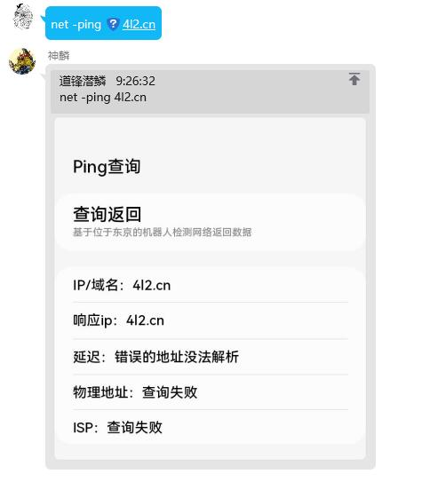

网络工具
指令一览¶
本功能核心命令前缀 net
指令和各个参数之间以空格分离，部分指令严格遵从空格分离机制
举几个正确的例子：
- net -ping 127.0.0.1
- net -tcping 127.0.0.1 80
- net -dns www.baidu.com
下面是目前已经开放的所有参数
使用时请使用 net + 功能参数（+可选参数） 的方式来调用神麟
| 功能参数 | 效果 | 是否有子参数 | 子参数内容 | 说明 |
|---|---|---|---|---|
| -ping | 返回一张图片，包含目标地址的延迟信息，物理位置 | 是 | 目标地址 | 为了缓解服务器压力，每次查询的结果都将缓存五分钟，五分钟内显示的均为同一图片 |
| -tcping | 返回一张图片，包含以TCP链接目标地址端口的延迟信息，物理位置 | 是 | 目标地址 + 空格 + 目标端口 | 为了缓解服务器压力，每次查询的结果都将缓存五分钟，五分钟内显示的均为同一图片 |
| -dns | 返回一张图片，包含目标地址的解析信息 | 是 | 目标地址 + (可选)客户端ip | 为了缓解服务器压力，每次查询的结果都将缓存五分钟，5分钟内显示的均为同一图片 |
| -whois | 返回一张图片，包含目标域名的whois信息 | 是 | 目标域名 | 为了缓解服务器压力，每次查询的结果都将缓存十个小时，十个小时内显示的均为同一图片 |
ping¶
指令和各个参数之间以空格分离，部分指令严格遵从空格分离机制
举几个正确的例子：
- net -ping 127.0.0.1
- net -ping baidu.com
错误例子
- net -ping 288.888.888.888
非标准IPv4划分 - net -ping https://baidu.com/
不需要使用协议头以及URI - net -ping fe80::d553:16d2:f59e:558e%16
暂不支持IPv6协议栈
{kind=link}
如图，如果神麟不存在服务异常或账号临时被风控的情况下，默认返回一张ping信息 
{kind=link}
tcping¶
指令和各个参数之间以空格分离，部分指令严格遵从空格分离机制
举几个正确的例子：
- net -tcping 127.0.0.1 80
- net -tcping baidu.com 443
错误例子
- net -tcping 288.888.888.888 80
非标准IPv4划分 - net -tcping https://baidu.com/ 80
不需要使用协议头以及URI - net -tcping fe80::d553:16d2:f59e:558e%16 80
暂不支持IPv6协议栈 - net -tcping 127.0.0.1 11111111
非规定1-65535端口范围
{kind=link}
{kind=link}
dns¶
指令和各个参数之间以空格分离，部分指令严格遵从空格分离机制
举几个正确的例子：
- net -dns www.baidu.com
- net -dns www.baidu.com 114.114.114.114
错误例子
- net -dns 1.0.0.0
无法查询ip - net -dns https://baidu.com/
不需要使用协议头以及URI
{kind=link}
{kind=link}
whois¶
指令和各个参数之间以空格分离，部分指令严格遵从空格分离机制
举几个正确的例子：
- net -whois baidu.com
- net -whois qq.com
错误例子
- net -whois www.baidu.com
无法查询子域名 - net -whois https://baidu.com/
不需要使用协议头以及URI
{kind=link}
{kind=link}